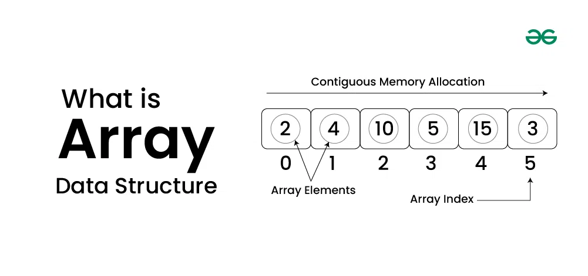

Introduction To C++
C++is a powerful general-purpose programming language that was developed as an extension of the C programming language by Bjarne Stroustrup in the early 1980s. C++ is widely used for system/software development, game development, and applications that require high performance.
Features of C++
- Object-Oriented: C++ supports object-oriented programming (OOP) principles, allowing for the creation of classes and objects. This helps in organizing code and promoting reusability.
- Rich Standard Library: C++ provides a rich set of built-in functions and libraries, which can significantly reduce the development time.
- Performance: C++ offers low-level memory manipulation, allowing developers to optimize performance-critical applications.
- Portability: C++ programs can be compiled and run on various platforms without significant modifications.
- Compatibility with C: C++ is compatible with C, allowing for the integration of existing C code.
Basic Syntax
#include <iostream>
using namespace std;
int main() {
cout << "Hello, World!" << endl;
return 0;
}
Online C++ Compiler
Introduction to Arrays
What is an Array?
An array is a data structure that stores a collection of elements, typically of the same data type. Arrays are used to store multiple values in a single variable, which allows for efficient data management and manipulation.

Characteristics of Arrays
- Fixed Size: The size of an array is defined when it is created and cannot be changed.
- Indexed: Each element in an array is accessed using an index, which typically starts from 0.
- Homogeneous Elements: All elements in an array must be of the same data type, such as integers, floats, or strings.
Types of Arrays
- One-Dimensional Arrays: A linear list of elements, where each element can be accessed by a single index
- Example: int numbers[5]; (stores 5 integers)
- Multi-Dimensional Arrays: Arrays with more than one dimension, commonly used for matrices and table
- Example: int matrix[3][3]; (a 3x3 matrix of integers)
- Dynamic Arrays: Arrays that can change size during program execution, typically implemented using data structures like lists.